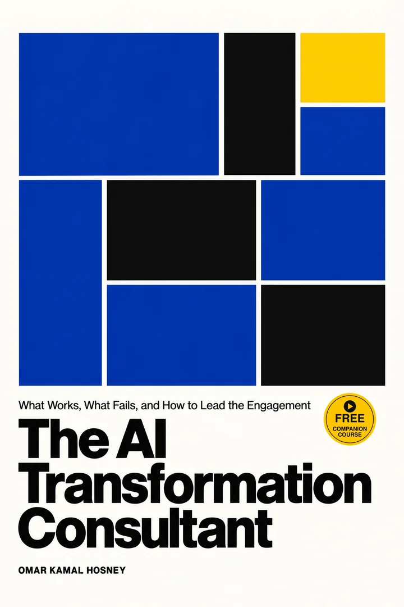
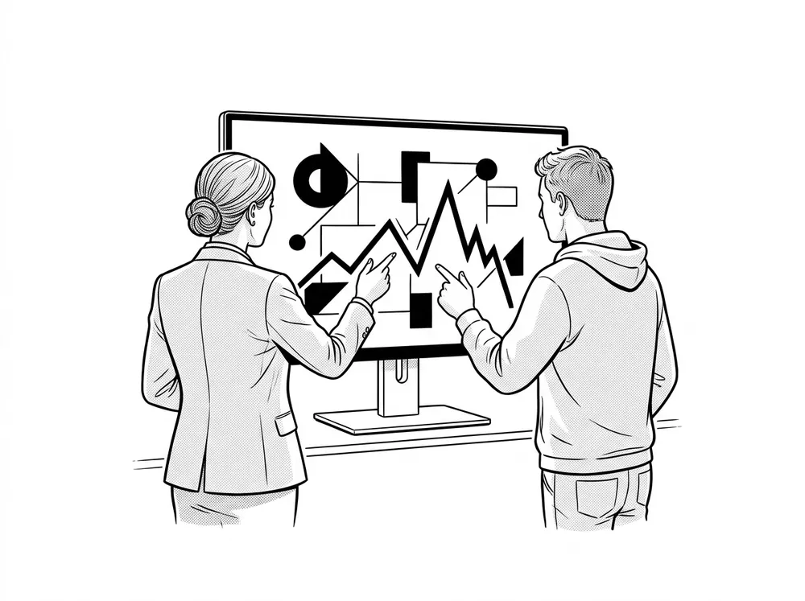

The AITransformationConsultant
What Works, What Fails, and How to Lead the Engagement
A field guide for consultants who lead AI-transformation engagements and get questioned on them. Learn how the systems actually work, why so many programs stall after the pilot, and what to do about it, with every number traced to a source.

Freecompanioncourse
“95% of AI pilots fail.”
Every steering committee has seen that slide. It does not say what it seems to say.
The book takes the slide apart, and then hands you the method. Before you repeat any failure number, turn five dials. Two numbers that seem to contradict each other usually differ on at least one of them.
Six famous numbers, decoded
Tap a card to see what the number actually counts.
The honest base rate is not “95% fail”; it is “most pilots do not scale, so design the program for that”.From Chapter 7, The pilot trap. Each figure above is cited in the book.
For the consultant who has to lead the room.
You are preparing to lead AI-transformation engagements and expect to be questioned on them, by a client or in an interview. You may come from software, finance or strategy, and you know that technology is rarely the hard part.
What you probably lack is one honest account that joins the two halves: how these systems actually work, and why so many programs built on them stall.
Diagnose
Name which of the eight failure modes, F1 to F8, a stalled program is in, and say why, with three questions per suspect.
Plan
Build a recovery or a fresh start on the seven success factors, S1 to S7, and defend it to a sceptical sponsor.
Hold your own
Handle the consultant’s own challenges: credibility with engineers, vendor neutrality, scoping and pricing, expectations, and keeping current when the field moves monthly.
Eight ways a program fails.
Seven ways to answer.
Each failure mode has a symptom you will recognise in the first steering committee, and a success factor that answers it. Pick a failure to see how it shows up and what the evidence says to do.
F1 Wrong problem
F1 to F6 pair with S1 to S6; cost surprises and risk blind spots both answer to S7. Appendix B turns all fifteen into a scorecard you can run against a client in an afternoon.
Two parts. Ten chapters.
One field guide.
Part I gives you real technical depth without assuming you build models for a living. Part II turns to leadership: why transformations fail, what works, the four industry lenses and the consultant’s own toolkit.
Speak the Language
From learning systems to LLMs, agents, guardrails and regulation.
Software versus learning systems
Rules written by people versus rules learned from data, classical machine learning on one page, and why model quality is a business cost.
Deep learning, transformers, and the data beneath them
How a network learns, why the transformer won, build versus buy, and why data problems surface late.
Inside the large language model
One token at a time: pre-training, tuning, why hallucination is a rewarded behaviour, and model drift.
Putting LLMs to work
Prompts as programs with a budget, RAG, open versus closed, and the evals that decide whether a demo survives production.
Agents, platforms and hyperscalers
From chatbot to agent, tools and standards, what autonomy costs, the framework landscape and a reference architecture.
Guardrails, operations and regulation
A guardrail pipeline, the injection triad, red-teaming, the EU AI Act and NIST, and litigation as a risk register.
Lead the Transformation
Why programs fail, what works, the case files and your own toolkit.
The pilot trap: why transformations fail
Reading the failure statistics with five dials, then the eight ways a program fails and how to tell them apart.
Strategies that work
Seven success factors ranked by their evidence, a six-stage playbook with an exit gate, the business case and the operating model.
Industry lenses and the case files
Automotive, pharma, healthcare and retail, then MD Anderson and JPMorgan Chase scored against the same framework.
The consultant’s own challenges and toolkit
Seven challenges graded by their evidence: credibility, neutrality, scope and price, liability, proving your value, keeping current, and running the interview.
A plain-language primer
40 core terms in plain language, to hand to colleagues and clients who are not technical.
Frameworks and checklists
The F1–F8 and S1–S7 scorecard, a maturity assessment, a prioritisation sheet, pilot exit criteria, five contract clauses, fifteen interview questions and red-flag questions to ask the client.
What to take into the room
Every chapter ends with the few points worth carrying into the next meeting.
Black and white. Built to be read.
Diagrams carry few shapes and large labels, so they stay legible on a Kindle Paperwhite and in a 6 × 9 paperback. Scene illustrations open the chapters without a word of text in them. Tap any page to enlarge it.
One failure. One success.
The same fifteen questions.
Each case is scored on F1 to F8 and S1 to S7, with the source weighed before the story: filings, audits and rulings first, named press next, and a company’s figures about itself treated as claims.
MD Anderson’s Oncology Expert Advisor
$62.1M paid to IBM and PwC through August 2016, according to the University of Texas System audit.As of September 2016 the system was not in clinical use and had not been integrated with the hospital’s new record system. After more than four years, it had not reached a patient.
JPMorgan Chase LLM Suite
200,000 users onboarded within eight months, a company-reported figure that has not been independently audited.A platform, not a project: one controlled portal, a bank-owned layer that swaps outside models in and out, data sources vetted for an accountable owner, and no per-seat licence.
The book keeps the comparison honest: the success is described mainly in the company’s own words and the failure by an independent audit, and the scores are the author’s judgment, not a published verdict.
Prefer to watch first? It’s free.
The book grew from AI for Business Consultants, a five-module video course on YouTube that follows the same path, about an hour and a half in all. Hear the ideas before you read them, or watch the diagrams animate.
- TrailerThe course in 32 seconds0:32
- Module 1AI in One Sitting: From Rules to Learning to Transformers19:22
- Module 2Generative AI and LLMs, Inside Out17:38
- Module 3Agents, Platforms, Hyperscalers and Guardrails16:53
- Module 4Making AI Transformation Work16:51
- Module 5Case Studies and the Interview Toolkit16:48
Questions, answered plainly.

Who is this book for?
Consultants who are preparing to lead AI-transformation engagements and expect to be questioned on them, by a client or in an interview. Readers come from software, finance or strategy; you need to know how organisations work, not how to build models.
Do I need a technical background?
No. Part I aims for real technical depth without assuming you build models for a living, and Appendix A is a plain-language primer of 40 core terms that you can hand to colleagues and clients who are not technical.
How reliable are the numbers?
Every number is cited, and the bibliography lists 332 sources. Company-reported figures are labelled as such, fast-moving facts such as prices, product names and regulatory timelines are dated November 2026, and several widely repeated statistics are corrected rather than repeated. The case scorecards are the author’s own judgment, and the book says so.
Which formats are available?
A Kindle eBook and a 203-page paperback (6 × 9 inches), both on Amazon. The diagrams are black and white and drawn to stay legible on a Kindle Paperwhite.
Is there a companion course?
Yes. AI for Business Consultants is a free five-module video course on YouTube, about an hour and a half long, and the book grew from it. The paperback’s preface has a QR code that opens Module 1.
Walk in with a diagnosis, not a slogan.
The language of AI, the evidence on why programs stall, and a toolkit for leading the engagement, in 203 cited pages.